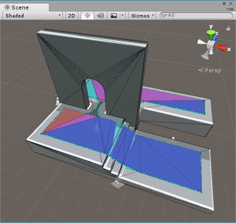

Description 描述
Specify which of the temporary data generated while building the NavMesh should be retained in memory after the process has completed.
It is possible to collect and display in the Editor the intermediate data used in the process of building the navigation mesh using the NavMeshBuilder. This can help with diagnosing those situations when the resulting NavMesh isn’t of the expected shape.

Input Geometry, Regions, Polygonal Mesh Detail and Raw Contours shown after building the NavMesh with debug options
The process for computing a NavMesh comprises of several sequential steps:
i. decomposing the Scene's terrain and meshes into triangles;
ii. rasterizing the input triangles into a 3D voxel representation and finding ledges;
iii. partitioning the voxels lying at the surface into simpler horizontal regions;
iv. finding a tight-fitting contour for each of these regions;
v. simplifying the contours into polygonal shapes;
vi. creating a mesh of convex polygons based on all the contours combined;
vii. refining the polygonal mesh into a triangulated version that approximates better the Scene's original geometry.
Through the use of the debug functionality the results from each stage can be captured and displayed separately, whereas normally they would get discarded when the NavMesh construction is completed.
Depending on the Scene composition this debug data can be considerably large in size. It is stored in memory in a compressed manner but gets further expanded when being displayed.
Notes:
1. Unity does not save Debug visualizations - they are only available during the session in which Unity is building the NavMesh.
2. Debug data is neither displayed nor collected for NavMeshes that are statically baked with the legacy system, nor for any patches recomputed locally due to the presence of NavMesh Obstacles.
See Also: NavMeshBuildSettings, NavMeshBuilder.BuildNavMeshData, NavMeshEditorHelpers.DrawBuildDebug.
Properties 属性
| flags | Specify which types of debug data to collect when building the NavMesh. |